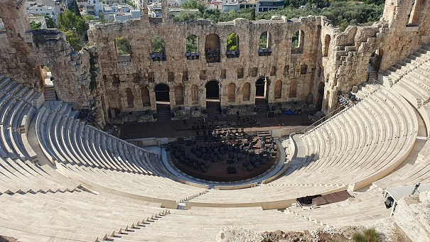
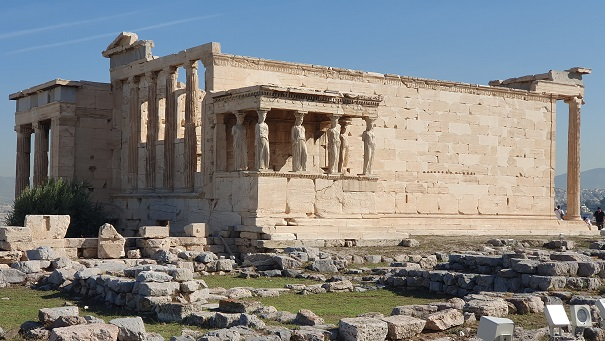
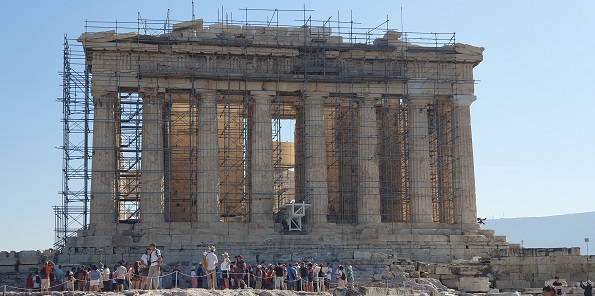
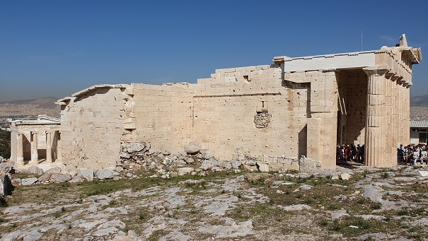
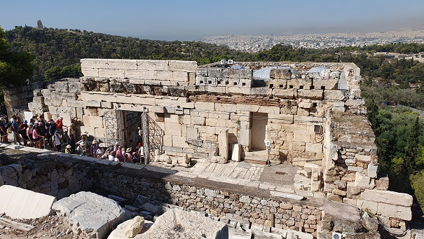
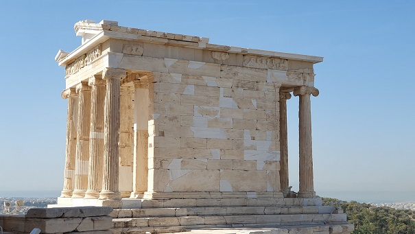
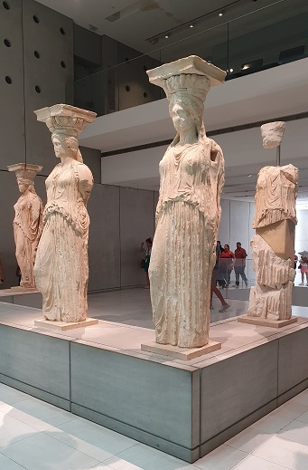
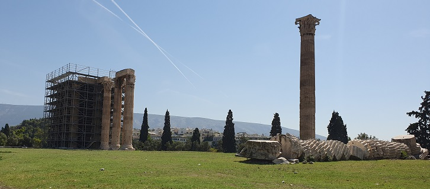
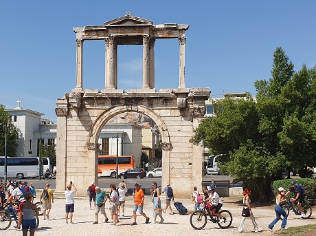
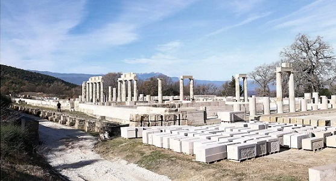

|
G R E C I A En los anales de la historia, en los
tiempos heroicos, la expedición de los Argonautas, la guerra de Troya,
etc. ...................Alejandro Magno................los macedonios se
aliaban con Aníbal contra Roma, los etolios llamaron en su auxilio a los
romanos.
Creta fue el centro de la civilización denominada civilización minoica
desde el año 3000 al 1200 a.e.c, y que desapareció probablemente como
consecuencia de la erupción del volcán de Santorini.
Otros yacimientos arqueológicos minoicos: Festos, Malia y Hagia
Triada.
La Acrópolis de
Atenas es uno de los lugares más importantes de toda Grecia. El Odeón de Herodes
Ático fue construido por orden del cónsul romano Herodes Ático en el año
161, estaba destinado a eventos musicales. Originalmente poseía una
cubierta de cedro. Estaba revestido de mármol, con el suelo cubierto de
mosaicos y una capacidad para más de 5.000 espectadores.

 El Partenón, el
principal edificio del conjunto arquitectónico de la Acrópolis de
Atenas. Símbolo de la belleza de la arquitectura clásica de la antigua
Grecia. Comenzó a edificarse en el año 447 a.e.c. para albergar una
gigantesca estatua de 12 metros de altura de Atenea Partenos.
Finalmente, el templo se acabó en el año 432 a.e.c. Templo de estilo
dórico, levantado sobre tres gradas, las dimensiones aproximadas del
edificio son de 69,5m de longitud, por 30,9m de anchura, con columnas
que alcanzan los 10,93m de altura haciendo que el Partenón mida un total
de 14 metros de altura.

Los Propileos se empezaron a construir en el año 437 a.e.c. Mnesicles fue su constructor, bajo los Propileos está la puerta Beulé, la entrada original a la Acrópolis.


Junto a Los Propileos se edificó el Templo de Atenea Niké, en su lado oeste, en el año 426 a.e.c. en conmemoración de las victorias de los atenienses sobre los persas.

El Museo de la Acrópolis está dedicado a la preservación y exposición
de los restos hallados en la Acrópolis. Se exponen unas 4.000 piezas.
 En el sótano del Museo se conservan los restos de un antiguo barrio de Atenas. Fue descubierto durante la construcción del museo. Calles, viviendas, baños, talleres y tumbas nos muestra cómo era la vida cotidiana desde el IV milenio a.e.c. hasta el siglo XII.
El Templo de Zeus Olímpico, también conocido como el Olimpeion,
fue construido entre los siglos VI y II a.e.c. en
honor al dios Zeus Olímpico. El templo medía 96m de largo x 40m de ancho.
Constaba de 104 columnas
corintias de 15 metros de altura, de las que hoy sólo se conservan 15.

En la esquina noroeste del templo se encuentra la Puerta de Adriano, un impresionante arco de mármol de 18 metros de altura que separaba la ciudad antigua (ciudad de Teseo) de la ciudad moderna (ciudad de Adriano). Fue construido en el año 131 en conmemoración del emperador romano Adriano.

Más monumentos que podemos visitar, la antigua Ágora, la Estoa de Átalo, el Templo de Hefesto, el Ágora romana y la Biblioteca de Adriano, Pompeion, la Antigua Necrópolis y su Museo..... En febrero de 2020, hallan decenas de tablillas de maldición en un pozo de 2.500 años de antigüedad. Según los arqueólogos, arrojar una tablilla de maldición a un pozo significaba "activarla", porque se creía que desde allí se conseguía "acceso directo" al inframundo.
Salónica El Arco de Galerio construido entre los años 297 y 303 para conmemorar las victorias imperiales de Armenia, Persia y Mesopotamia. La Iglesia de Hagios Gueorguios del siglo IV. Se cree que era el templo-mausoleo levantado en honor del divinizado Galerio; y los mosaicos de la época de Teodosio. También destaca el Palacio de Galerio de finales del siglo III. El foro romano construido en el siglo II y el Museo Arqueológico de Tesalónica.
Corinto Fue devastada por las legiones romanas en el 146 a.e.c. Destaca el Templo griego, el Templo de Apolo, el Santuario de Hera, las termas romanas, el Templo de Poseidón ...
Delfos En el yacimiento arqueológico de Delfos destacan los santuarios de Apolo y Atenea, el denominado Tesoro de los Atenienses, el teatro, el estadio, la vía sacra, el Tholos, el gimnasio y su museo.
Dion Destaca el Museo Arqueológico y el Parque Arqueológico de Dion, con su recinto amurallado y sus calles siguiendo el trazado romano. Fuera de las murallas se han descubierto varios templos y un teatro helenístico-romano.
Elefsina En Elefsina se localizan las ruinas de la antigua Eleusis, uno de los centros religiosos más importantes de la antigua Grecia, donde se celebraban los Misterios Eleusinos.
Messene En Messene destaca su yacimiento arqueológico con teatro, gimnasio, estadio, Asclepieion, Ekklesiasterion, …
Pella El Museo Arqueológico con sus mosaicos y el busto de Alejandro Magno; y su yacimiento arqueológico.
Vergina En enero de2024, reabre el Palacio de Filipo II, el edificio más grande de la Antigua Grecia. Fue construido a mediados del siglo IV a.e.c. y fue completada en 336 a.e.c., llevado a cabo por Filipo II de Macedonia, el padre del legendario Alejandro Magno. El palacio se encuentra a pocos kilómetros del Museo de Vergina, donde yacen los restos de Filipo II en una tumba.

Kasos En enero de 2021,
en la isla de Kasos Emergen vasijas de época romana fabricadas en
talleres del Guadalquivir. Las cerámicas, de categoría Dressel 20, han
sido halladas bajo el agua en la isla, junto a un naufragio del siglo II
o III. Las vasijas eran utilizados para el transporte de aceite y vino.
Junto a ese naufragio del periodo romano, los arqueólogos localizaron
tres más, uno del siglo V a.e.c; otro del siglo I a.e.c. y un tercero de
comienzos del siglo XX. Por la isla de Kasos pasaban las rutas marítimas
que conectaban el norte de África con el mar Negro y el Mediterráneo
occidental con el oriental.
|